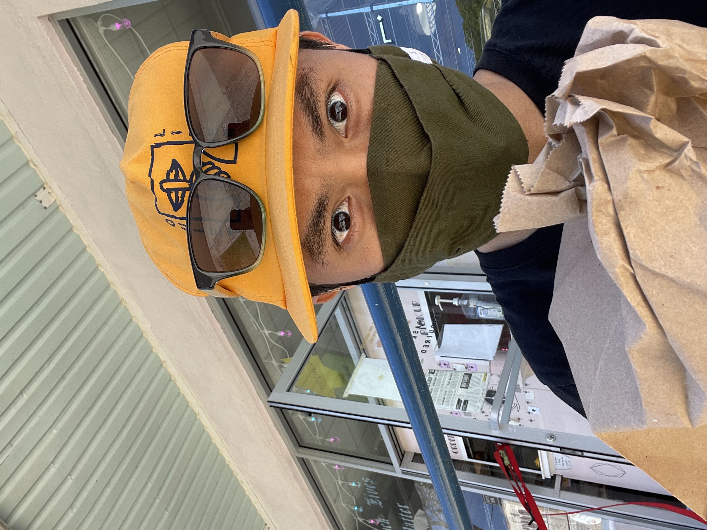

Dave Maluyo is a Storyteller
"Our stories are essentially a way to share what we see, experience, and everything else in between."
I'm Dave Maluyo from Kaneohe, Hawaii. Through design and illustration I enjoy creating spirited work to tell meaningful stories. When I'm not constructing colors, shapes, or letters, I'm deconstructing music, photography and food.
Contact Me